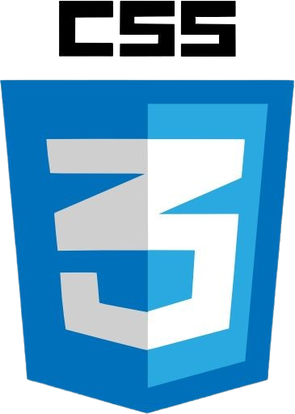
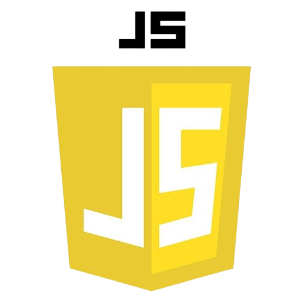
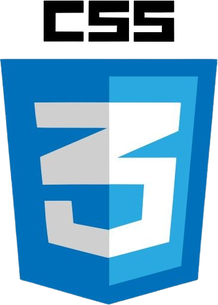
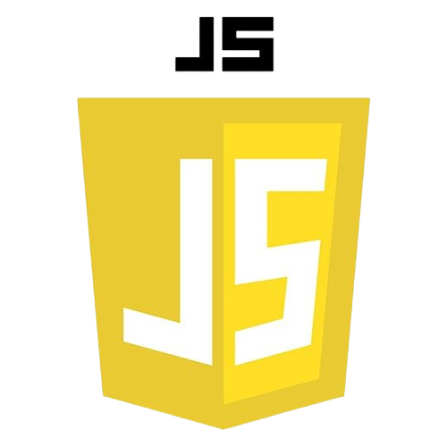

Hello
Eu sou a Beatriz Lins
Sou uma desenvolvedora de software apaixonada, com uma vasta experiência em criar soluções tecnológicas inovadoras. Minha jornada profissional é guiada pela busca incessante por excelência e inovação. Tenho um histórico comprovado na liderança de equipes de desenvolvimento, na gestão de projetos complexos e na entrega de produtos de alta qualidade que impulsionam a eficiência e a competitividade das empresas. Minha missão é transformar desafios tecnológicos em oportunidades de crescimento e sucesso para meus clientes.
Qualities
- Proatividade e Iniciativa
- Comunicação Eficaz
- Adaptabilidade
- Atenção aos Detalhes
- Colaboração e Trabalho em Equipe
Skills
 


